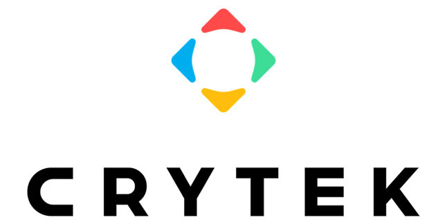

@Zenzerov Maxim
Crytek Geschichte
|  |
Die Crytek GmbH ist ein deutscher Spieleentwickler, der im Jahr 1999 von den türkischstämmigen Brüdern Cevat Yerli, Avni Yerli und Faruk Yerli in Coburg gegründet wurde. Studio Crytek Publisher Frankreich Ubisoft Leitende Entwickler Cevat Yerli, Avni Yerli, Faruk Yerli |
| Far Cry ist ein Ego-Shooter aus dem Jahr 2004. |
|
Warface ist eine unterhaltsame Portierung eines Ego-Shooters, |
-Developer(s) Crytek Kiev[a] Blackwood Games (2019) My.Games (2019–present) |